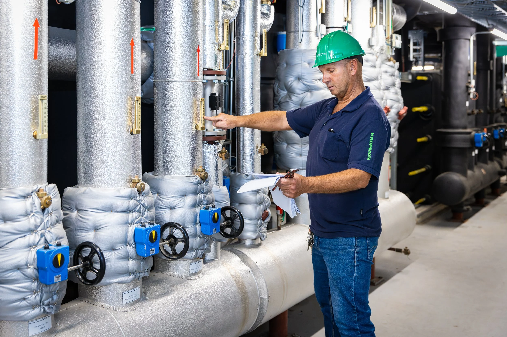
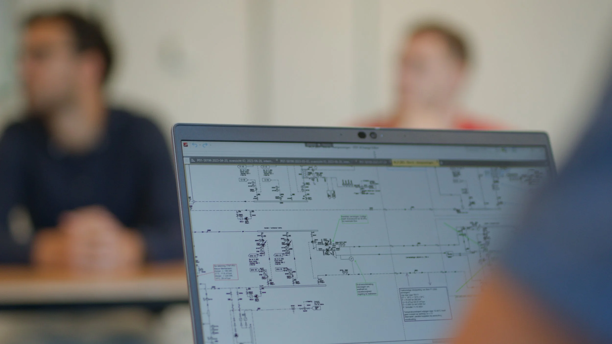
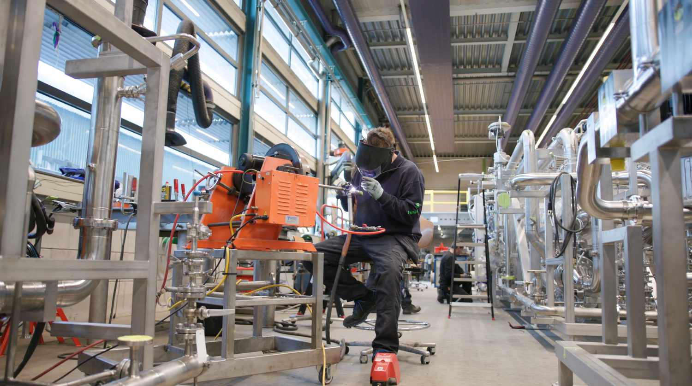
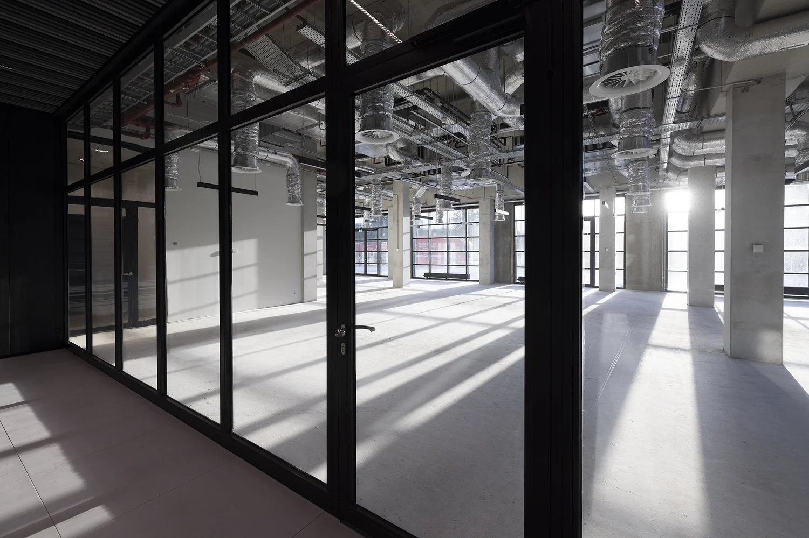
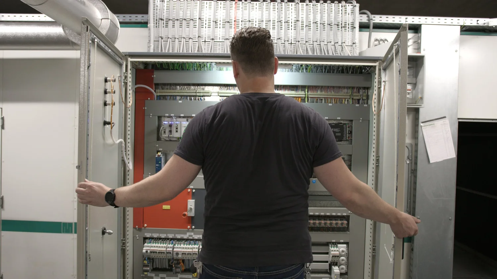
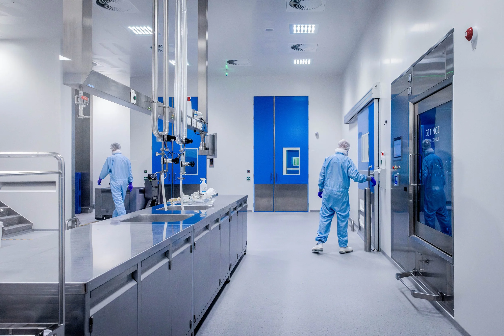
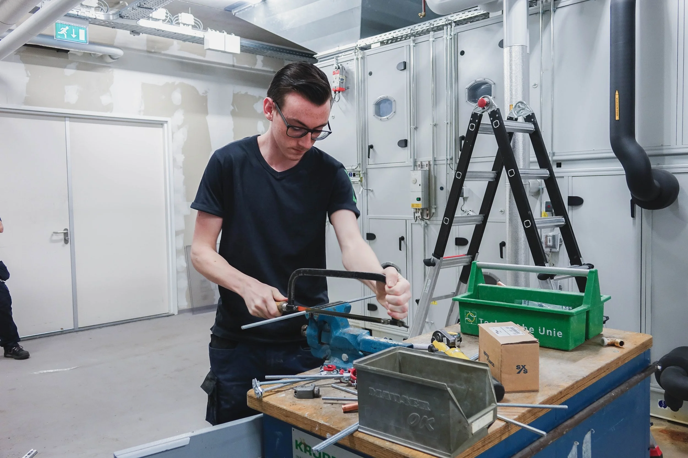
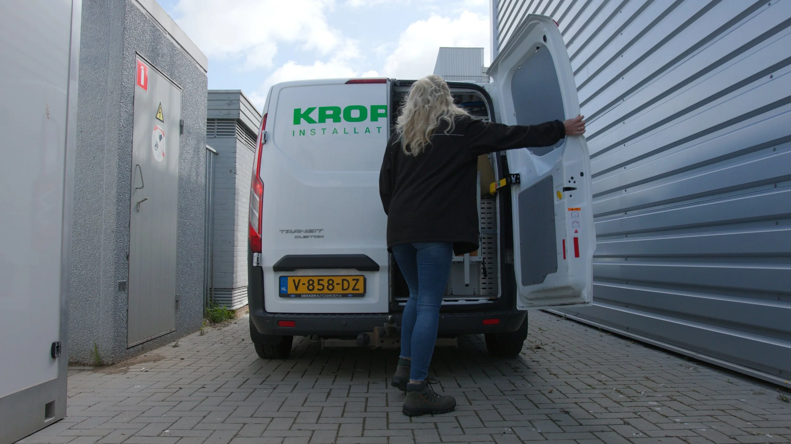

Verbinding door techniek
Veilige en gezonde gebouwen waar mensen prettig werken en goed presteren. Kropman neemt de gebouwinstallatie volledig uit handen: van ontwerp en realisatie tot onderhoud, beheer en exploitatie.
Bereikbaar maandag tot en met vrijdag, 08:00 tot 16:30.

Eén partij, van tekening tot exploitatie
Als Kropman ergens aan begint, gaan we voor kwaliteit en blijven we betrokken tot het eind. U hoeft de installatie niet over meerdere partijen te verdelen: wij ontwerpen, maken onderdelen voor in eigen werkplaats, bouwen, en zorgen daarna dat alles blijft werken.
-
Ontwerp & Techniek
De installatie eerst goed op tekening, afgestemd op het gebouw en de mensen die er werken.

-
Prefabricage
Onderdelen worden in de werkplaats voorgebouwd, zodat het werk op locatie sneller en netter gaat.

-
Realisatie
Het ontwerp wordt gebouwd: leidingen, kanalen, elektra en regeltechniek, opgeleverd als één geheel.

-
Beheer & Onderhoud
Na oplevering houden we de installaties veilig en betrouwbaar, zolang het gebouw in gebruik is.


Contamination Control
Cleanrooms en gecontroleerde ruimtes, waar lucht, druk en hygiëne precies moeten kloppen. Denk aan farmacie en zorg, waar een installatie geen marge heeft.
Verder in huis
- Automatisering in gebouwen
- Klimaat, verlichting en installaties die op elkaar reageren in plaats van los van elkaar te draaien.
- Beheer op afstand
- Meekijken in uw installaties zonder dat er iemand langs hoeft te komen.
- Beveiligingstechniek
- Techniek die het gebouw en de mensen erin beveiligt, ontworpen samen met de rest van de installatie.
Voor wie we werken
Gebouwen waar veel van afhangt, in zeven branches.
- Zorg
- Farmacie
- Zakelijke dienstverlening
- Overheid
- Industrie & Energie
- Sport & Recreatie
- Onderwijs

Kom werken bij Kropman
Werk mee aan veilige en gezonde gebouwen en maak Nederland elke dag een stukje groener. Je krijgt de ruimte om te ontdekken waar je passie ligt en leert van de kennis die Kropman in huis heeft.
Vacatures
Werk aan veilige en gezonde gebouwen vanuit een van de twaalf vestigingen.
Stage & afstuderen
Stages in techniek, engineering, projectleiding, bedrijfskunde, ICT en HR. Geen passende opdracht? Stuur een open sollicitatie.
Zij-instroom
Overstappen naar de techniek? We zoeken samen de opleider die bij je past en bieden maatwerk.
Kropman Academy
Een loopbaanpad dat bij jou past: jij bepaalt mee wat je wilt leren en op welke manier.
12 vestigingen, altijd dichtbij
Verspreid over heel Nederland, zodat er altijd een team in de regio zit dat uw gebouw kent.

-
Utrecht
Veldzigt 2B
info.utrecht
3454 PW De Meern@kropman.nl Alkmaar
Melkweg 8
info.alkmaar
1841 JJ Stompetoren@kropman.nl Almere
Veluwezoom 42
almere
1327 AH Almere@kropman.nl Amstelveen
Bouwerij 71
info.amsterdam
1185 XW Amstelveen@kropman.nl Assen
Nijverheidsweg 3
info.assen
9403 VN Assen@kropman.nl Breda
Zuilenstraat 96
info.breda
4813 AC Breda@kropman.nl Eindhoven
Croy 9C
info.eindhoven
5653 LC Eindhoven@kropman.nl Nijmegen
Lagelandseweg 84
info.nijmegen
6545 CG Nijmegen@kropman.nl Bijsterhuizen
Bijsterhuizen 1146
info.fabriek
6546 AS Nijmegen@kropman.nl Rijswijk
Verrijn Stuartlaan 36
info.rijswijk
2288 EL Rijswijk@kropman.nl Twente
Hazenweg 70
info.twente
7556 BM Hengelo@kropman.nl Zwolle
Grote Voort 201
info.zwolle
8041 BK Zwolle@kropman.nl
Een installatie bespreken?
Bel of mail ons. U krijgt iemand aan de lijn die meedenkt over uw gebouw.
"Mooi bedrijf met fijne sfeer"
Kropman Utrecht
Veldzigt 2B3454 PW Utrecht (De Meern)
088 334 4000
info
Openingstijden
- Maandag
- 08:00 tot 16:30
- Dinsdag
- 08:00 tot 16:30
- Woensdag
- 08:00 tot 16:30
- Donderdag
- 08:00 tot 16:30
- Vrijdag
- 08:00 tot 16:30
- Zaterdag
- Gesloten
- Zondag
- Gesloten